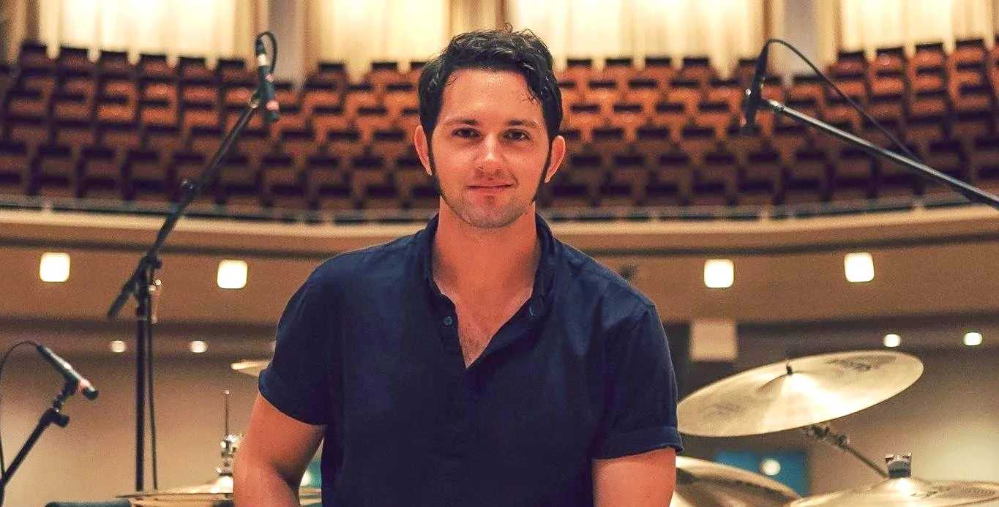

Tom Benko
Tom Benko is a Chicagoland drummer, educator, composer, curator, and active freelancer. As the Director of Percussion for both New Trier (Winnetka, IL) and Highland Park (Highland Park, IL) High Schools, Tom oversees percussion sectionals, drumline, private lessons, percussion ensemble, and the pep band. Each spring, Tom and local area directors curate the NorthShore Percussion Fest, providing students the opportunity to showcase their talents and learn from both local and national professionals.
Beyond education, Tom has an extensive performance background. They were a drummer and drum trainer for Blue Man Group Chicago for 11 years, performing at The Briar Street Theater, teaching new Blue Men drumming and show parts, and contributing to the casting department. Tom has also performed with The Chicago Bears Drumline, The Chicago Bulls Stampede, Jon Allegretto, AD3, Kevin Presbrey, Minor Characters, Sam Rae and as a soloist.
As a co-founder of The Rhythm Messengers—alongside Adam Hill, Scott Simon, and Brandon Brown— Tom creates custom drum performances for corporate, live, and private events in Chicago and abroad. The Rhythm Messengers also power The Two Friends Drumline and The Kane County Cougars Drumline, bringing high-energy entertainment to diverse audiences.
Since 2015, Tom has been the driving force behind Emanation, a Chicago music series dedicated to eclecticism and fostering collaboration among artists from different genres and scenes. Their passion for musical diversity and innovation continues to shape the local music community. This series is held at Century Mallet - a staple of the city's
In addition to these projects, Tom is an active freelancer, composer, and gigging drummer, performing in Chicago and beyond. Their work spans various styles and settings, from intimate club gigs to large-scale productions.
Through every endeavor, Tom acknowledges the unwavering support of his incredible wife, Emily, whose encouragement has been instrumental in his continued journey.